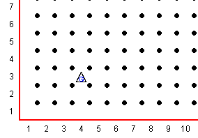

Guido van Robot kan vier kanten op lopen , Noord, Zuid, West en Oost. Hij kan ook uitsluitend een draai van 90º maken dus hij kan bv nooit naar Noord-Oost gaan, alleen Noord of Oost. In Guido's wereld lopen de lanen van Noord naar Zuid (van boven naar beneden) en de straten van Oost naar West (van links naar rechts).
Deze lanen en straten zijn genummerd van 1,2 3 enz.. Er komen geen negatieve nummers voor en geen nul. Guido beweegt van kruispunt naar kruispunt in een beweging. Aangezien hij maar in een van de vier richtingen kan bewegen gaat hij dus altijd naar, of een volgende laan, of een volgende straat, nooit allebei. Anders gezegd, hij gaat of verticaal, of horizontaal, nooit diagonaal.
In deze les gaan we een eerste wereld maken, plaatsen we onze robot Guido, en laten we hem zijn eerste stapjes maken. Maak een wereld met de volgende opdracht, en bewaar het als "stap01.wld"
Robot 4 3 N 0
Dit maakt een wereld met Guido op het kruispunt van de 4e laan en de 3e straat, richting Noord.
Het zal er ongeveer zo uitzien:

Deze serie Guido van Robot lessen zijn geschreven door
Roger Frank.
Commentaar and suggesties over deze lessen kunnen gestuurd worden naar
Stas Zytkiewicz die de lessen
vertaalde naar het Nederlands.
De orginele lessen zijn te vinden op de
Guido van Robot website.
Copyright
© 2003 Jeffrey Elkner.
© 2007 Stas Zytkiewicz.